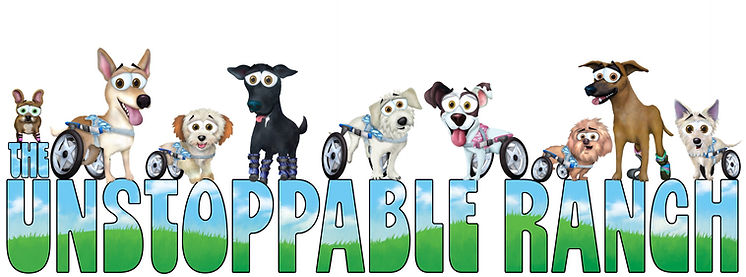

It's here!
The Unstoppable Ranch, nestled in beautiful Temecula, California, is a sanctuary built for some of the most vulnerable, forgotten, and extraordinary dogs in the world. Here, disabled dogs who have survived abuse, abandonment, and unthinkable hardship are finally given the safety, love, and dignity they always deserved. And in the most beautiful turn of all, the dogs who once needed saving now help heal humans through their courage, resilience, and extraordinary spirit. This is more than a sanctuary. It is a place of second chances, deep healing, and hope. Here, love rebuilds what the world tried to destroy. If you want to learn more and understand more about our mission, we strongly encourage you to reach out via our contact page or social media and come meet the dogs.
Donate Now Read Our Executive Summary